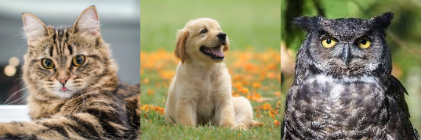

HTML for Tutorial 2

Cat Stuff
- Cats are lactose intolerant.
- Cats cannot taste anything sweet.
- Cats only meow to humans.
- Cats sleep 70% of their lives.
- Cats have a powerful memory.
Cat joke
Why are cats so good at video games?
Because they have 9 lives, of course!
Dog Stuff
- Dogs sweat through their feet.
- Dogs can smell your feelings.
- Dogs can detect human illness.
- Dogs have incredible hearing.
- Dogs have ear mobility.
Dog joke
I can't take my dog down to the local pond anymore, because the ducks keep attacking him.
It's my fault for choosing a pure bread dog.
Owl Stuff
- Female owls are bigger than males.
- Owls can rotate their heads almost all the way around.
- Owls do sleep standing up.
- Owls are covered in extremely soft feathers that provide insulation during cold temperatures.
- Owls range in size from teeny-tiny to large and imposing.
Owl joke
What do you call a magical owl?
HOOOO-Dini!